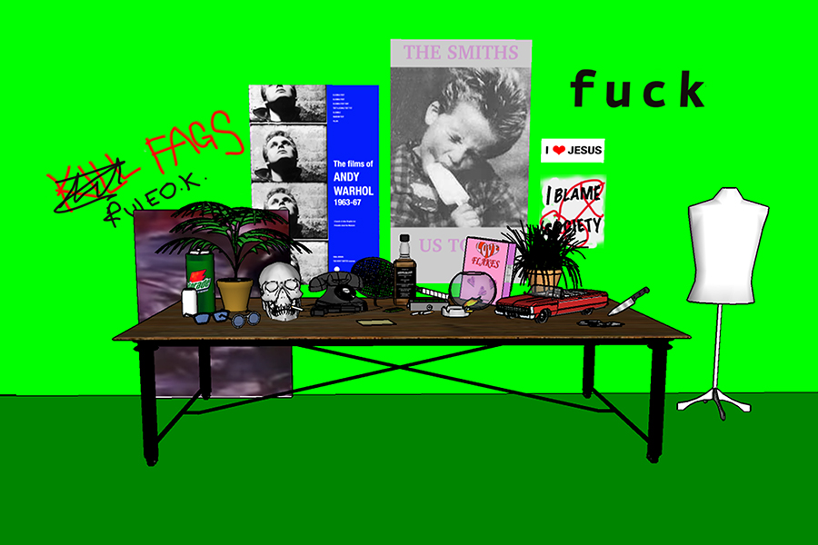

The Still Living End
We are seeking a Director of Photography, Prop Master (Production Designer), and Lighting Designer for a small independent project that will be produced at Western Front as part of a production residency in July 2018.
Updated deadline for applications: Feb. 23
Project Description
The Still Living End is a short, experimental, single-channel video about AIDS nostalgia directed by Toronto based video artist Vincent Chevalier. This is a small independent project that will be produced at Western Front as part of a production residency in July 2018 and is funded through a grant from the Ontario Arts Council.
The Still Living End is a nostalgic rendering of an original motion picture, portrayed through a meticulous recreation of its theatrical properties (props). The video will be a lush yet haunting tableau vivant or living painting featuring a collection of props sourced from Gregg Araki’s 1992 film, The Living End. The props that make up the set of The Still Living End tableau will consist of every object seen, heard, or spoken about over the course of the original film and will be arranged as if on the prop of a fictional film shoot.
The visual and art historical reference for this project is the vanitas genre of classical painting. Like a vanitas painting, Araki’s film is saturated with reminders of our own mortality. The Still Living End focuses on the technical elements of film production in order to ask what is still living if all else is stripped away?
Rates Subject To Negotiation
- flat fee for production plus director meetings, research, and site visit
- based upon union wages
Production dates: Mid July / Early August 2018
Updated deadline for applications: Feb. 23
Qualified candidates are invited to submit a resume, cover letter, and links to portfolio website or demo reel to info@vincentchevalier.ca
Interviews will be held at the end of February at Western Front Gallery.
Job Descriptions and Roles
Director of Photography
The Director of Photography will be responsible for principal photography for The Still Living End, an opulent, and painterly short video shot in 5K. An experimental and non-narrative work, the video will consist of wide shots of a giant prop table filled to brim with objects and macro close-ups of said objects that will overwhelm and challenge the viewer’s sense of scale. This project provides an early career DP with the opportunity to express a unique point of view alongside an up-and-coming contemporary video art Director.
Requirements
- operate the camera, set up shots, and work efficiently within a tight shooting schedule
- determine technical requirements for the shoot and communicate with the Director in order to ensure proper equipment, personnel, and technical support
- work closely with the Director, Lighting Designer, and Props Master to integrate designs into a coherent vision based on art historical and cinematographic research
- strategize the integration of both macro and wide angle shots into a cohesive visual style
- understand and work within the framework independent video art project with a microbudget
- leading up to Production, the DP will:
- conduct scheduled site visits at Western Front along with WF staff, LD, Prop Master, in order to plan/design shotlist
- attend scheduled production meetings over Skype with Director
Assets
- access to own camera and lens kits (adjust rates to scale upward)
- experience with product, food, and/or fashion photography/videography
- knowledge of art historical references such as Renaissance painting (specifically Dutch still lifes), contemporary art video, and queer/experimental cinema
- a unique point of view and ability to communicate vision with passion and open communication
Props Master (Production Designer)
The Props Master/Production Designer will play an integral role in this production, as they will be responsible for the sourcing, procurement, and production of the majority of props for The Still Living End. This project provides an early career Props Master (or Production Designer) with the opportunity to experiment and develop their portfolio alongside an up-and-coming contemporary video art Director.
Requirements
- extensive experience in prop sourcing and knowledge of local resources for the procurement and production of materials
- ability to collaborate and render the Director’s vision into a coherent production design
- determine technical requirements for the shoot and communicate with the Director in order to ensure proper equipment, personnel, and technical support
- subcontract prop builder to assist (subject to discussion and negotiation if necessary)
- work closely with the Director, Lighting Designer, and Director of Photography to integrate designs into a coherent vision based on art historical and cinematographic research
- present a viable procurement plan that aligns with materials budget and includes a variety of methods including rental, purchasing, and construction
- be able to model, construct, and modify new and existing props to properly suit the production design
- hold a driver’s license and have access to car
- leading up to Production, the Props Master will:
- conduct scheduled site visits at Western Front along with WF staff, LD, DP, in order to produce/present designs and procurement plans
- attend scheduled production meetings over Skype with Director
Assets
- access to local prop houses
- resourcefulness, independence, and the ability to propose creative solutions for maximizing value within a limited budget
- knowledge of art historical references such as Renaissance painting (specifically 17th century Dutch still lifes), contemporary art video, and queer/experimental cinema
Lighting Designer
The Lighting Designer will be responsible for the lighting design for The Still Living End. Working from the visual treatment and in close conversation with the Director, Director of Photography, and Production Designer/Props Master, the Lighting Designer will craft a dynamic and adaptive lighting design for the production to convey narratives, highlight key concepts, and illuminate referential threads present within the work.
Requirements
- extensive experience in lighting design for independent, small productions and knowledge of local resources equipment rental
- ability to collaborate and render the Director’s vision into a coherent lighting design
- experience and ability working with lighting grids and ad-hoc equipment to construct a specialized system and design
- determine technical requirements for the shoot and communicate with the Director in order to ensure proper equipment, personnel, and technical support
- work closely with the Director, Director of Photography, and Props Master to integrate lighting designs into a coherent vision based on art historical and cinematographic research
- present a viable technical plan that aligns with available equipment, budget requirements, and assist with acquisition of any additional equipment
- be able to adapt and problem solve around space requirements
- leading up to Production, the Lighting Designer will:
- conduct scheduled site visits at Western Front along with WF staff, DP, Props Master in order to facilitate design process
- attend scheduled production meetings over Skype with Director
Assets
- access to own specialty lighting equipment and interest in experimental lighting techniques an asset
- experience with lighting design for theatre, video, and/or product photography
- knowledge of art historical references such as Renaissance painting (specifically Dutch still lifes), contemporary art video, and queer/experimental cinema
- a unique point of view and ability to communicate vision with passion and open communication